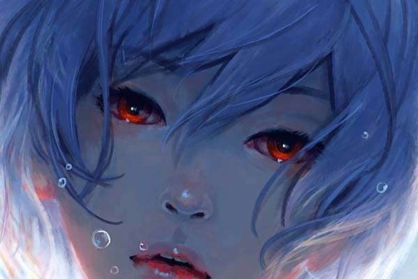
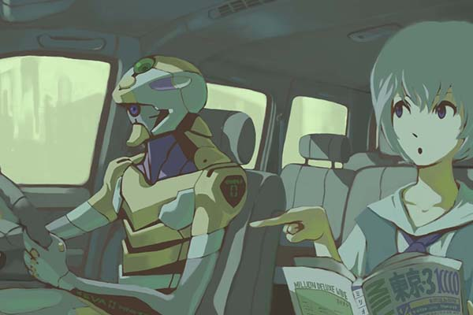
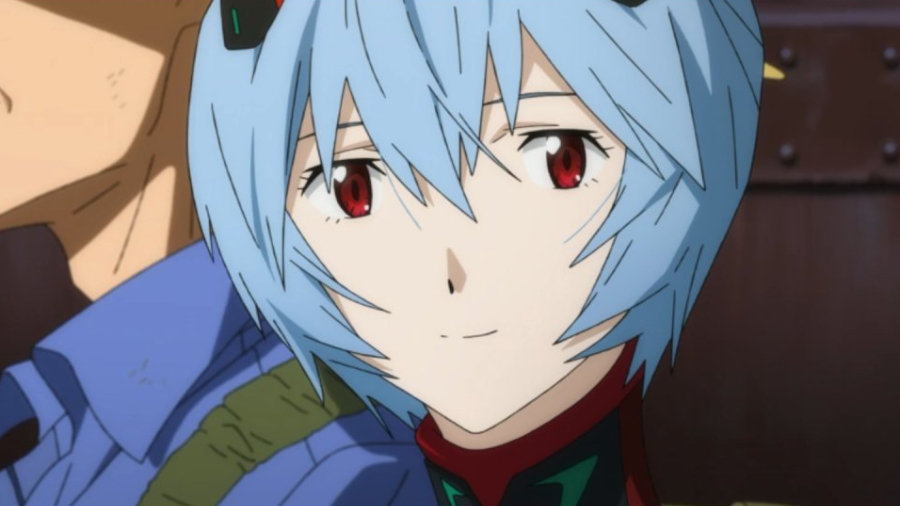
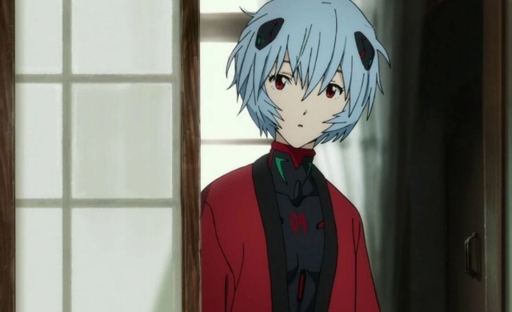

Al inicio de la serie, Rei Ayanami es presentada como una joven enigmática de carácter introvertido, silenciosa y nada comunicativa, que a pesar de confiar en las personas adultas, sólo manifiesta emociones y lealtad sincera hacia Gendo Ikari, con quien también mantiene una relación distante.
Rei vive en una calle desolada de Tokio-3, en el solitario apartamento número 402. Este apartamento demuestra que Rei lleva una vida monótona y aislada. Además, resulta ser una representación de la habitación subterránea en la que nació y se crió, según dice Ritsuko Akagi en el episodio 23.
La posesión material más preciada de Rei son las gafas rotas de Gendo Ikari, que recogió del suelo cuando a éste se le cayeron al liberarla del Entry Plug eyectado del EVA-00.


En el episodio 05, Shinji va al apartamento de Rei para entregarle una identificación. Cuando ella sale de la ducha, parece no importarle que Shinji puede verla desnuda. En cambio, ella se molesta al ver que Shinji sujeta las gafas de Gendo. Cuando Shinji se cae encima de ella, Rei lo trata como una molestia menor y le pide que por favor se mueva. Ella luego se viste en su presencia, sin demostrar vergüenza o malestar alguno.
Más tarde, cuando Shinji intenta pedir disculpas a Rei por lo ocurrido, a ella no parece importarle. Esto demuestra que Rei posee tan poca experiencia relacionándose con otras personas, que no tiene ni idea del efecto que podría tener su desnudez sobre un adolescente.

Durante ese episodio, Rei sólo demuestra enojo cuando Shinji habla despectivamente sobre Gendo y por eso ella le da una bofetada. Sin embargo, Rei entabla una relación de cariño con Shinji desde que éste la rescata tras su combate con Ramiel, abriendo la escotilla del Entry Plug tal y como había hecho su padre en el pasado. En ese momento, Rei manifiesta no saber qué expresar y Shinji le pide una sonrisa. Ella le corresponde.
Tiende a atraer el rechazo de Asuka Langley Soryu, debido a su personalidad extremadamente sumisa, pasiva y obediente. Cuando Asuka le ofreció su amistad, Rei le respondió que la aceptará cuando le sea ordenado por los adultos. De hecho, Rei es diametralmente opuesta a Asuka, que es extrovertida y pasional, mientras que Rei es introvertida y fría.
A medida que avanza la serie, Rei comenzó a distanciarse de Gendo. Ella empieza a desarrollar relaciones con otros y a mostrar momentos de genuina emoción. Poco a poco, un fuerte lazo comenzó a desarrollarse entre ella y Shinji. Rei ha hablado con Shinji en varias ocasiones, lo cual es algo destacable, ya que ella casi nunca habla con nadie.
En el episodio 12 se revela que Rei es vegetariana. No está claro si es por elección, o debido a su fisiología. Cabe señalar que Hideaki Anno, el creador de la serie, también es vegetariano, al igual que Nadia, otro personaje creado por Anno.
El único momento de pánico que experimenta Rei es cuando le piden que se retire luego de ver que Shinji fue absorbido por Leliel. Más tarde, se da cuenta que Shinji es importante para ella gracias a unas palabras que le dijo Toji Suzuhara.
Queda implícito en el episodio 19 que Rei Ayanami no sueña. Cuando Shinji está inconsciente en el hospital Asuka dice que debe estar soñando. Rei está desconcertada al oir las palabras de Asuka, ya que no sabe qué es eso. En otro momento de la serie, Rei parece sentir compasión por la repentina depresión de Asuka y su incapacidad para pilotar el EVA-02. Por esa razón, trata de ofrecerle un consejo, pero se ve correspondida por insultos y una bofetada.
El clímax de la evolución emocional de la joven llega durante el combate contra Armisael. En ésta pelea, una súbita desesperación mezclada con un choque de recuerdos la lleva a sorprenderse a sí misma llorando. Y motivada por un fuerte deseo de salvar la vida a Shinji, ella autodestruye el EVA-00 pereciendo aparentemente con él. Sin embargo, Rei no tarda en reaparecer, sin recuerdos, pero manifestando deseos de conocerse a sí misma. Ésta curiosidad la lleva a recordar sus emociones recientes y a volver a llorar. Finalmente ella elige a Shinji sobre el Comandante Ikari, e incluso destruye las gafas de Gendo, el símbolo de su vínculo con él.
